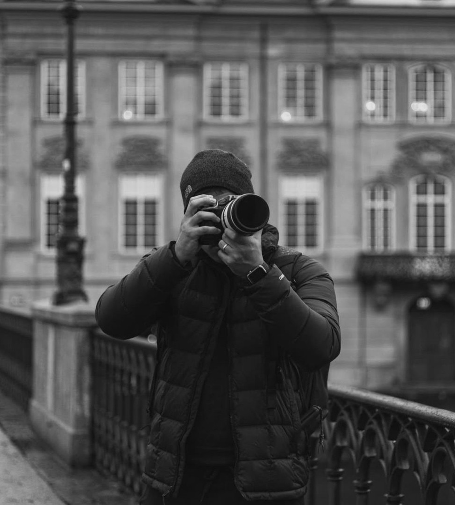

Iceland is no stranger to breathtaking landscapes and world renowned photography. Its beauty rests in many forms. There are mountains that remain still for centuries, and waterfalls that never stop moving. Fire rises from the earth while ice quietly holds its ground. In a place like this, it becomes difficult for photographers, or for anyone, to put their cameras away. This black and white collection presents a selection of Santoshi's photographs taken during his visit to Iceland in the summer of 2025.
The long daylight of the Icelandic summer stretches far beyond what most places know. Hours feel generous, almost endless. Under this patient sun, people and animals step outside to wander across fields, cliffs, and shores. For a camera, the land feels generous too. Moments appear everywhere, waiting to be noticed.
Iceland is often called a land of fire and ice. Yet it is also a land of wind, light, water, and silence. Even without colour, its spirit remains clear. In black and white, the textures of stone, clouds, and water speak in their own quiet language. Through light and shadow, Iceland reveals itself again and again.
This book, The Tip of the Iceland, as the title suggests, offers only a humble glimpse of the land. There may be more volumes to come, for who am I to say we could ever capture it all?

Available soon on Amazon.